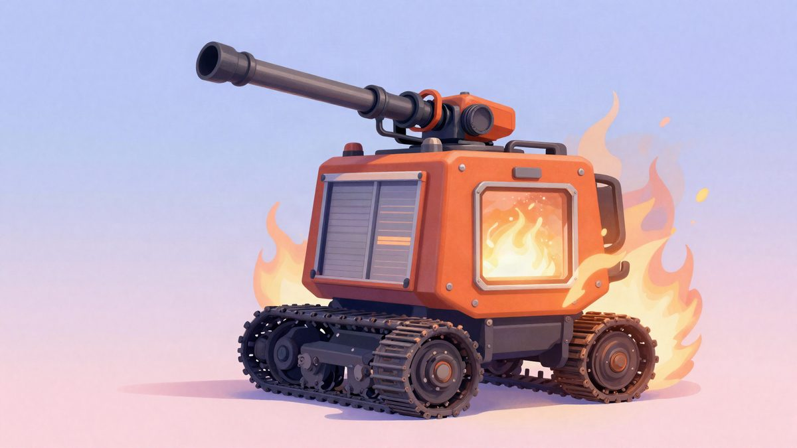
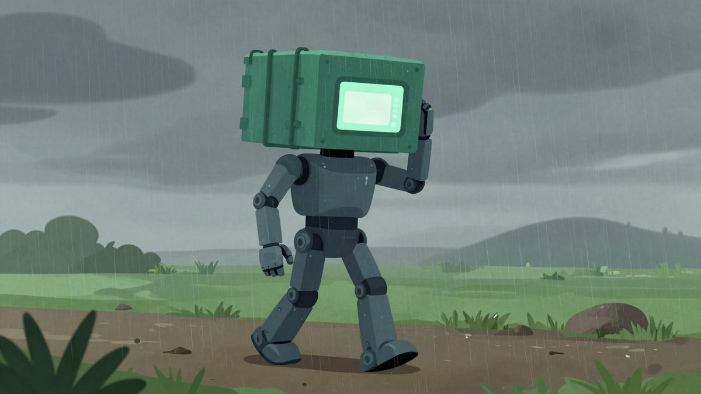

Kineski robot od 30 kg izolira 30 metara dalekovoda pod naponom u 15 minuta

State Grid Changzhou Power Supply Company demonstrirala je robota koji postavlja izolacijske obloge na dalekovod pod naponom, bez isključivanja struje. Robot teži nešto više od 30 kilograma, a 30 metara voda obloži u 15 minuta, tvrdi tvrtka. Cijena još nije poznata.
State Grid Changzhou Power Supply Company, državna tvrtka za opskrbu strujom iz kineske pokrajine Jiangsu, demonstrirala je robota koji na nadzemne vodove pod naponom postavlja izolacijske obloge, a struja se pritom ne isključuje. Robot teži nešto više od 65 funti, odnosno manje od 30 kilograma, a 30 metara voda obložio je za 15 minuta, navodi tvrtka.
Prema njezinim riječima, robot se može prilagoditi za nadogradnju distribucijskih mreža napona do 35 kilovolta, što bi tehnologiju moglo proširiti na veći broj projekata održavanja.
Kako robot radi
Robot se sam spaja na vod i pomoću strojnog vida određuje svoj položaj. Servo motorima zatim precizno namješta izolacijsku oblogu prije ugradnje. Zaštićen je od jakog elektromagnetskog polja pa nema opasnosti od strujnog udara, tvrdi State Grid Changzhou.
Ipak, ne radi potpuno bez ljudi. Operater ostaje na tlu i upravlja robotom ili ga nadzire daljinskim upravljačem, računalom ili kontrolnom konzolom. Kad ga operater pokrene, robot se samostalno kreće po vodu, postavlja obloge i ugrađenim senzorima u stvarnom vremenu provjerava kvalitetu ugradnje.
Rezultati probnog rada
U priopćenju piše da je pilot-projekt protekao sigurno i bez utjecaja na potrošnju struje kod korisnika. Naknadni pregled na terenu, kaže tvrtka, pokazao je da su obloge čvrsto postavljene i da zadovoljavaju traženu točnost spajanja, odnosno da je svaka obloga ispravno povezana.
Oprema, tvrde iz tvrtke, izbjegava rizike rada na visini i sprječava prekide napajanja. Klasične nadogradnje izolacije oslanjaju se na penjanje po stupovima i radne košare na kamionima. Takve metode često nisu prikladne za stambena naselja s uskim uličicama i nose dodatne sigurnosne rizike, pa State Grid Changzhou zagovara robote na gradilištima do kojih kamioni s košarom teško dolaze.
Roboti na dalekovodima i ranije
Kineske elektroenergetske tvrtke robote već koriste i za inspekciju. Početkom ove godine komunalne tvrtke u jugozapadnoj Kini koristile su robotske zmije koje se omotaju oko vodova. Kamerama i senzorima otkrivaju oštećene žice, istrošene dijelove i nenormalne temperature. Prema pisanju internetskih medija, takvi roboti pregledali su više od 130 kilometara distribucijskih vodova koji opskrbljuju ispitne centre u blizini zračnih zona zabrane letenja.
Izvor: Interesting Engineering
Povezani članci

Kineski robot za gašenje požara izdržao je 30 minuta u peći na 1.000 °C19. studenoga 2026.
Foundation je predstavio Phantom MKII: humanoidni robot za 91 kg tereta, kišu i prašinu20. studenoga 2026. Humanoidni robot Howl uči skupljati jaja s poda peradarnika, NC State cilja na 2027.17. studenoga 2026.
Humanoidni robot Howl uči skupljati jaja s poda peradarnika, NC State cilja na 2027.17. studenoga 2026.